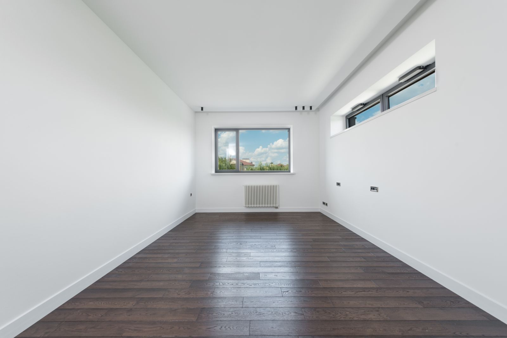
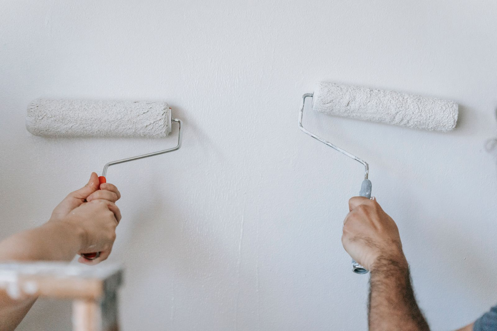

Notes · Rental and maintenance
Rental Turnover Painting: Getting a Unit Rent-Ready Without Losing a Month
A vacant day costs about $39 at the near-ring median rent. Turnover painting, a portfolio paint spec, and the lead rule landlords are covered by.

About the numbers on this page
Every dollar figure below is a published market range from the sources listed at the end of the post. None of it is a Colors Your Way USA price. Every job is quoted after a walk-through, because the two things that decide the number are the condition of what is already there and how much trim is involved, and neither of those is visible in a photograph.
The photographs on this page are stock. They are placeholders until Mike Walsh’s own job photos are available. Any diagrams are drawn for this post.
Every landlord we talk to has the same instinct on turnover painting: get it cheap. That is the wrong variable. The expensive thing about a turnover is not the paint. It is the days.
Here is the arithmetic, using real local rent data instead of a guess.
What a vacant day costs here
| Town | Median gross rent | Renter households | Cost per vacant day |
|---|---|---|---|
| Alsip | $1,102 | 2,709 | $36 |
| Hickory Hills | $1,112 | 1,585 | $37 |
| Bridgeview | $1,139 | 2,146 | $37 |
| Worth | $1,164 | 1,517 | $38 |
| Chicago Ridge | $1,198 | 2,391 | $39 |
| Justice | $1,198 | 2,329 | $39 |
| Burbank | $1,241 | 1,913 | $41 |
| Palos Hills | $1,267 | 1,496 | $42 |
| Oak Lawn | $1,310 | 3,805 | $43 |
| Evergreen Park | $1,425 | 1,219 | $47 |
| Orland Park | $1,415 | 3,214 | $47 |
| Tinley Park | $1,518 | 2,756 | $50 |
Source: U.S. Census Bureau, American Community Survey 5-year estimates 2023, tables B25064 (median gross rent) and B25003 (tenure). Cost per vacant day is monthly rent multiplied by 12 and divided by 365, rounded.
The nine towns closest to us hold roughly 19,900 renter-occupied units between them. Justice is 48 percent renter households. Chicago Ridge is 45 percent. This is not a fringe market out here, it is a large one.
Median rent across those nine near-ring towns is $1,198, which is about $39 a day. Now put that next to what the work costs.
Fifteen empty days costs about what a room repaint costs. So a painter who is $200 cheaper and takes a week longer has cost you money, not saved it. That is the frame the whole rest of this post sits on.
The deposit rules, and why your painting invoice is part of them
Turnover painting is not only a maintenance decision here. It is tied to how you handle the security deposit, and the deadlines are short.
This is not legal advice. Check your own situation with your attorney, and check whether your municipality is covered before you rely on any of it. With that said, two things every landlord in suburban Cook County should know:
The Cook County Residential Tenant and Landlord Ordinance took effect June 1, 2021 and, per the county, applies to almost all rental units in suburban Cook County. It caps security deposits at 1.5 times monthly rent, requires deposits be held separately from personal accounts, and requires the deposit be returned within 30 days with an itemized list of deductions. Coverage has exclusions and some municipalities have their own ordinances, so confirm where your building falls.
The Illinois Security Deposit Return Act (765 ILCS 710) requires an itemized statement of damage and repair cost furnished within 30 days of the tenant vacating, with paid receipts attached or supplied within 30 days if the initial figures were estimates. If that statement and those receipts are not furnished as required, the Act says "the lessor shall return the security deposit in full within 45 days of the date that the lessee vacated the premises." Courts may award twice the deposit plus court costs and reasonable attorney's fees.
Here is the practical consequence for painting, and it is one most owners miss.
Ordinary repainting between tenants is generally your cost as the owner. Repairing tenant damage is a different line. If you are going to deduct anything from a deposit for wall condition, you need a paid invoice that separates the two, with the damage described specifically. "Painting: $1,400" does not do that. This does:
| Line | Amount | Deposit deductible? |
|---|---|---|
| Standard turnover repaint, walls and ceilings, 2 bed unit | $ | No. Ordinary wear |
| Repair and patch, 11 anchor holes and 2 drywall punctures, bedroom 2 | $ | Potentially |
| Stain-blocking primer, water damage from unreported bathroom leak | $ | Potentially |
| Odor sealing, smoke, whole unit | $ | Potentially |
Ask your painter to invoice it that way from the start. Trying to reconstruct it after the fact, inside a 30 day window, is how deductions get thrown out.
The turnover sequence, and what actually runs in parallel
Most turnovers are slow because they are run in a straight line when they do not have to be.
| Stage | Typical order | Can it overlap? |
|---|---|---|
| 1. Walk-through and photo documentation | Day of move-out | No. This has to be first |
| 2. Trash-out and haul | Day 1 | No |
| 3. Repairs: drywall, doors, trim, hardware | Day 1 to 2 | Partly, by room |
| 4. Clean | After repairs | No, dust kills paint |
| 5. Prime and paint | Day 2 to 4 | Yes, room by room while other rooms are still in repair |
| 6. Floors: refinish, replace or deep clean | After paint | Usually after, so paint drips do not land on new flooring |
| 7. Final clean and punch list | Last | No |
| 8. Photos and listing | Last | No. Do this the day painting finishes, not the day everything finishes |
That last row is the free money. List the unit and start showings the moment the walls are done and the unit photographs well. Waiting until the punch list is completely closed before you advertise adds days to the vacancy that the work did not require.
The other overlap worth building in: get the repairs and the paint from the same trade where you can. When one person is handling the drywall patching, the door that will not latch, the loose baseboard and the paint, you lose the two or three days that get burned waiting for a second contractor to show up. That is the entire argument for a general trades outfit on turnovers rather than a painter alone.

Run a portfolio spec, not a per-unit decision
If you own more than two units, this is the highest-leverage change available and it costs nothing to implement.
Pick one wall color, one ceiling color, one trim color, one sheen, one product line. Write it down. Use it in every unit.
What that buys you:
| Benefit | Why it works |
|---|---|
| Touch-up instead of repaint | Same color and same sheen means a scuffed hallway is a twenty minute fix, not a room |
| No color matching | Matching an unknown existing color costs a trip, a sample and a guess |
| Buy in fives | Five gallon buckets instead of gallons, one order, less waste |
| Leftovers are inventory | A half bucket from unit 3 is usable in unit 7 |
| Faster estimates | Your painter is quoting a known scope every time |
| Consistent listings | Every unit photographs the same, which matters more than owners think |
Choosing the spec: a warm off-white or very light greige on walls in eggshell, flat or ceiling-flat on ceilings, and semi-gloss on trim and doors, is the configuration most portfolios land on for good reasons. Eggshell washes. Flat hides the patch history on ceilings. Semi-gloss on trim survives vacuum cleaners.
One warning on sheen. Higher sheen shows more of the wall, so an eggshell or satin spec raises the prep standard on every unit. If your units are older plaster with a long patch history, flat on walls will look better and cost less than satin will. More on that tradeoff in how to tell good prep from a fast cheap job.
Repaint, touch up, or spot prime and coat
Not every turnover is a repaint. Deciding correctly is worth real money across a portfolio.
| Unit condition | Right move | Roughly |
|---|---|---|
| Clean tenant, under 2 years, few marks, spec color already on the walls | Touch up and clean only | Hours |
| Normal 2 to 4 year tenancy, scuffs and anchor holes, spec color | Spot prime the patches, then one coat on the affected walls | Half a day to a day |
| Long tenancy, marks everywhere, or color is not your spec | Full repaint, walls and ceilings | Multiple days |
| Smoke, pets, water staining, unapproved dark accent walls | Full prep, stain-blocking primer, full repaint | Longest, and price it honestly |
| Wallpaper the tenant put up | Removal first. Published at $0.60 to $1.50 per square foot, typical project $443 to $1,120 | Add days |
The failure mode to avoid is touching up with a different sheen or a slightly different color. It does not blend, it flashes under the window light, and it looks worse than doing nothing. That is what the single-spec rule prevents.
What makes a unit slow, with the published costs
| Problem | Published cost data | Days it adds |
|---|---|---|
| Drywall patching | Labor from $75/hr. One room $444, two rooms $615, three rooms $742, four rooms $1,000, whole house $1,039 | 1 to 2 |
| Specific repairs | 5 ft wall crack $125, 3 ft ceiling crack $150, sand and texture five patches $200, repair a 4 by 8 ft section $225 | Within the above |
| Wallpaper removal | $0.60 to $1.50 per sq ft, typical project $443 to $1,120, labor $35 to $79/hr | 1 to 3 |
| Popcorn ceilings | Removal and finish, roughly $1.80 to $5.50 per sq ft, versus $1 to $2.50 to paint the ceiling flat | Several |
| Smoke and odor | Not published as a separate figure. Sealing primer plus extra coats | 1 to 3 |
Sources: Thumbtack drywall repair, wallpaper removal and popcorn ceiling removal cost pages, This Old House interior painting cost.
On popcorn ceilings in a rental, one caution. Ceiling texture in a pre-1980 building is a test-first job because of the asbestos question. Do not have anyone scrape it on a turnover schedule before it has been tested. That is a decision with a much longer tail than a vacant week.
The rule landlords are explicitly covered by
This is the most important compliance point in the post.
The EPA's Renovation, Repair and Painting rule requires that anyone paid to perform work that disturbs painted surfaces in housing built before 1978 be certified, and the EPA states this "includes all firms, even sole proprietorships." Rental property owners are covered when performing qualifying work that disturbs paint.
Now look at the housing stock. The median year built is 1975 in Bridgeview, 1976 in Justice, 1973 in Chicago Ridge, 1974 in Alsip, 1970 in Hickory Hills, 1967 in Oak Lawn and Worth, 1965 in Burbank and 1955 in Evergreen Park. The majority of the rental stock in the near ring is pre-1978.
Two practical consequences:
- When you hire out turnover painting on a pre-1978 building, ask for the contractor's EPA lead-safe firm certification number. It is a number. It exists or it does not.
- A bid that is dramatically cheaper on a pre-1978 building may be cheaper because it is skipping containment and cleanup. That is not a better price. That is a different job with your name on the building.
What to have ready before the painter walks in
This shortens every turnover and it costs you nothing.
- Unit fully empty, including closets and the garage stall
- Trash-out done
- Utilities on, especially power and heat
- Keys, lockbox code or access arranged in advance, not the morning of
- Your paint spec written down: color, sheen, product, per surface
- A note on anything unusual: the leak in the bathroom ceiling, the anchor holes in bedroom 2, the accent wall the tenant added
- Your target list date, so the crew size can be sized to the calendar rather than the other way around
The short version
- At the near-ring median rent, a vacant day costs about $39. Fifteen of them cost about what a room repaint costs.
- Speed is worth more than a $200 price difference on almost every turnover.
- Advertise the unit the day the paint is done, not the day the punch list closes.
- One color, one sheen, one product across the whole portfolio. It turns repaints into touch-ups.
- Invoice ordinary repaint separately from tenant damage, because the deposit deadlines are 30 days and the penalties are real.
- Most rental stock here is pre-1978. Ask for the EPA lead-safe firm certification number.
Our van says "Maintenance Service" on it, and this is what that means. We are at 7900 W. 83rd St. in Bridgeview and we do turnover painting, patching, trim and door work across the southwest suburbs. If you have units in Bridgeview, Justice, Chicago Ridge, Worth, Alsip, Burbank, Hickory Hills, Palos Hills or Oak Lawn, call 708-935-4289 and we will talk about a standing spec and a turnaround you can plan around.
More on this: interior painting and drywall repair and painting, which is most of what a turnover actually is. Related reading: what interior painting costs in the southwest suburbs.
References
- U.S. Census Bureau, American Community Survey 5-year estimates, 2023, tables B25064 (median gross rent), B25003 (tenure) and B25035 (median year structure built), retrieved via the Census Data API. https://www.census.gov/programs-surveys/acs
- Cook County, Residential Tenant and Landlord Ordinance. https://www.cookcountyil.gov/RTLO
- Illinois General Assembly, Security Deposit Return Act, 765 ILCS 710. https://www.ilga.gov/Legislation/ILCS/Articles?ActID=2202&ChapterID=62
- U.S. Environmental Protection Agency, Lead Renovation, Repair and Painting Program. https://www.epa.gov/lead/lead-renovation-repair-and-painting-program
- Thumbtack, Cost to Paint a Room. https://www.thumbtack.com/p/cost-to-paint-a-room
- Thumbtack, Drywall Repair Cost. https://www.thumbtack.com/p/drywall-repair-cost
- Thumbtack, Wallpaper Removal Cost. https://www.thumbtack.com/p/wallpaper-removal-cost
- Thumbtack, Popcorn Ceiling Removal Cost. https://www.thumbtack.com/p/popcorn-ceiling-removal-cost
- This Old House, Interior Painting Cost. https://www.thisoldhouse.com/painting/reviews/interior-painting-cost
Nothing in this post is legal advice. Cost figures are published national market ranges retrieved on August 31, 2026 and are not our prices.
See our interior painting page
Related